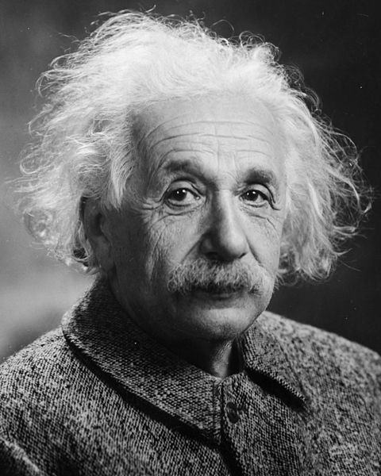
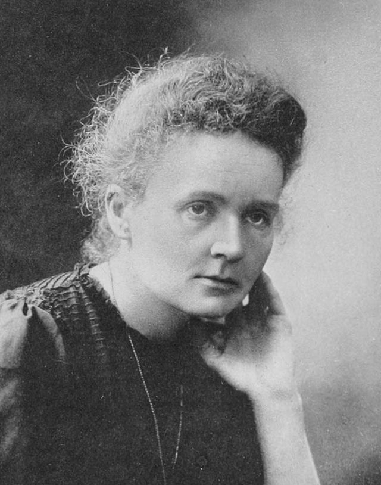
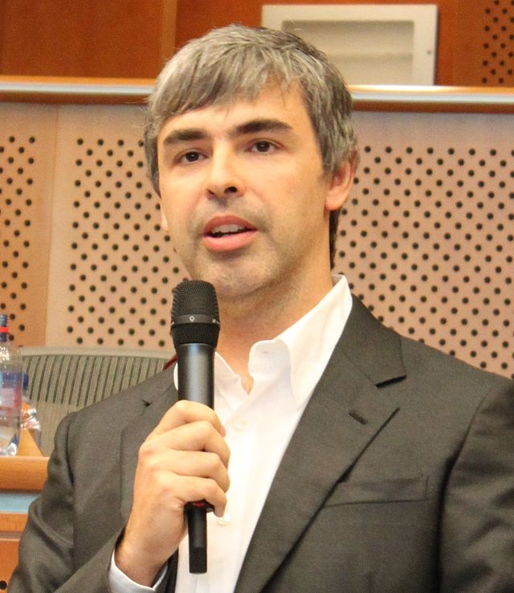

Com s'indica en l'enunciat d'aquesta PEC, l'aplicació web és un portal biogràfic. Concretament, s'ha decidit escollir personatges que amb les seves fites han millorat la vida de la humanitat
Així, a la web podreu trobar un repàs dels personatges científics i tecnològics destacats dels últims temps.
Categories
És evident que persones que amb els seus coneixements han permès evolucionar i fer avançar els coneixements humans són gairebé infinites.
Per tal d'acotar una mica l'àmbit d'aquest aplicatiu, només ens centrem en personatges destacats en els àmbits científics i tecnològics. Així, els diveros personatges els dividim en aquestes dues categories.
Si accediu a l'apartat 'Categories' del menú, trobareu el llistat dels diversos personatges segons l'ambit de les seves aportacions.
Detalls dels personatges
Des del llistat de categories podreu accedir al detall biogràfic d'un personatge concret. En aquesta plana trobareu un petit resum de la vida del personatge, seguit d'un llistat de dades interessants. A més, trobareu un resum dels 'invents' o aportacions més destacades que va proporcionar. Finalment, també podreu visualitzar un vídeo on es resumeix la biografia del personatge.



Enllaços
En aquesta secció (a la que podeu accedir a través de l'enllaç 'Enllaços' del menú de la pàgina), trobareu un recull de les fonts consultades. Aquests recull serà de qualsevol tipus de font: fotografies, vídeos, retalls biogràfics. Tot el que s'ha utilitzat per crear aquest aplicatiu web.